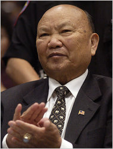

History of the Hmong People:
The Hmong community used to be mainly centered in China. However, they were chased out after conflicts with the Han Dynasty and forced to make homes in nearby areas. As a result, they sought for shelter in the high mountains of Vietnam, Laos, and Thailand. Despite the fact that they never had a land where they could call their "home", wherever they went, they found ways to survive. In the different areas the community resided in, they gained skills, started making rice, clothing, and built families and homes. They lived there peacefully for quite a while until they were met with the US. And that... was when everything turned for them.
The Secret War: a bloody and deadly battle in the jungle.
Hmong Leader: General Vang Pao

General Vang Pao and the US: the US was going through the Vietnam War at this time. Therefore they developed a prestigious plan to defeat their opponents. At this time, there was a huge amount of Hmong people residing in the high mountains and forest of Laos. The US's goal was to prevent communism from spreading in Laos, while Canada's goal was to help spread the idea of communism. Therefore it was a secret mental and bloody battle between the two countries.
The CIA secretly met up with the Hmong community's General Vang Pao to negotiate an alliance with the Hmong community in Laos. They promised the Hmong people a land of their own if they helped the US in the war, in which the Hmong leader, General Vang Pao agreed to. The CIA started training almost 60% of the Hmong men in the village. As the war began, things did not go the way the US planned. As a result, they withdrew their troops from Laos and left the Hmong community there ... still fighting against the communist Lao.
The war was done and over with for the US, but for the Hmong community it wasn't. Their homes were damaged, they lost friends and family, they turned against the country they were living in, they were being persecuted, chased, killed, and they were afraid. Afraid that their family members won't make it, afraid that they're going to die. In the jungle they ran for their lives everyday. The Lao soldiers were on the search for them day and night. The Hmong community had to find shelter in Thailand, however in order to do that they must cross the Mekong River. To many, the river meant death. To others, the river was a miracle.
Many lost their lives in the jungle, as many also escaped into the refugee camps in Thailand. Vang Pao contacted the US troops and they were able to send help for him and his close family. Him and his immdeiate family were able to escape to the US. After a few years, Vang Pao was able to negotiate and allow his fellow Hmong community to migrate to the US.
To learn more, click on this link Hmong Secret War